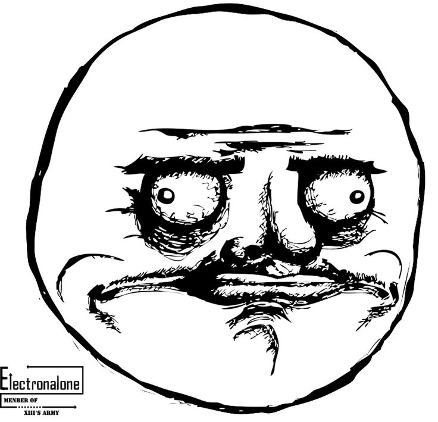

Who's to blame?
Gediminas Morkevičius aka @l3pp4rd


Yes! I screwed things
Fail recipe #1
mysql -u root databaseOn your localhost - development.
And on another shell - production
It is easy to mix the shells when running..
DELETE * FROM usersHow to prevent this from happening?
- Use readonly user for production database.
- Never use DELETE or UPDATE statements when connected to production.
Fail recipe #2
Composer modules
{
"require": {
"symfony/symfony": "~2.7.0",
"symfony/monolog-bundle": "~2.7",
"symfony/swiftmailer-bundle": "~2.3",
"my-company/payments":"~1.0"
}
}To prevent downloading vendor packages on deployment, we are building a release archive
gulp.task('archive', function(cb) {
spawn.exec('./bin/archive', function(err, stdout, stderr) {
if (err) {
gutil.log(gutil.colors.red('error'), ' => ', stdout);
} else {
gutil.log(gutil.colors.cyan('package'), ' => ', stdout);
}
cb(err);
})
});
gulp.task('package', function () {
runSequence('build', 'composer-minimize', 'composer-optimize', 'archive', 'composer-install', function (err) {
if (err) gutil.log(gutil.colors.red('error'), ' => ', err);
});
});It is a very high probability that developer, tampers with vendor sources..
vim vendor/my-company/payments
And it just went to production
A fix was applied..
gulp.task('composer-minimize', function(cb) {
// and ensure that tampered vendors are reset!
spawn.exec('rm -rf vendor/{my-company} && composer install --no-scripts --no-dev', function(err, stdout, stderr) {
cb(err);
});
});Fail recipe #3
Transaction management
Fail recipe #4
Unreadable and unmaintanable code
Fail recipe #5
I've badly prepared for this presentation
Epic fail
Develop everything in smallest possible steps, otherwise you might not finish anything..
Initial commit on DoctrineExtensions
I failed so many projects, because I tried to publish something better, bigger, nicer